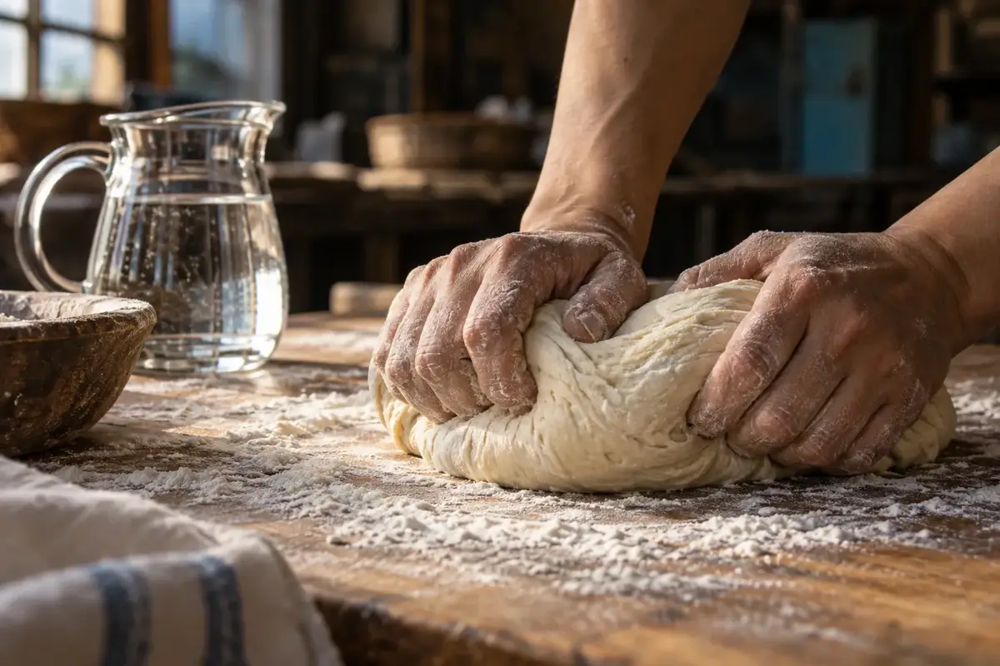
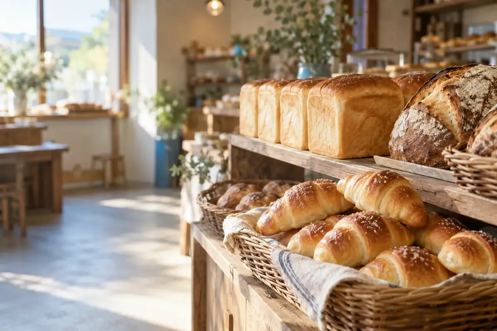
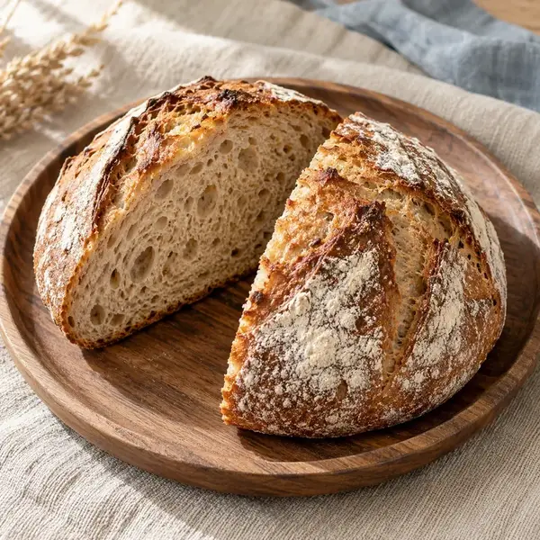
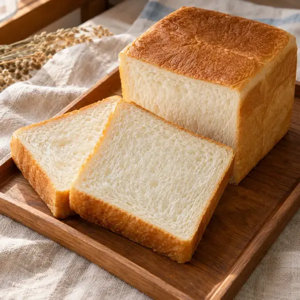
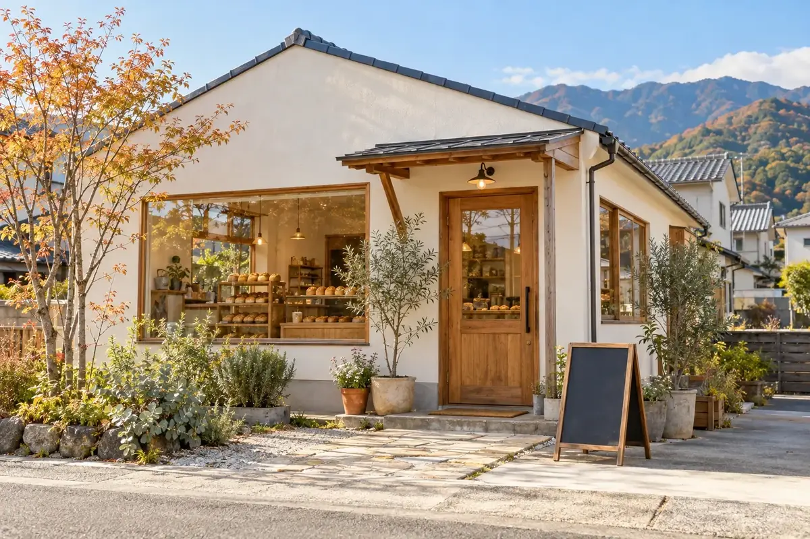
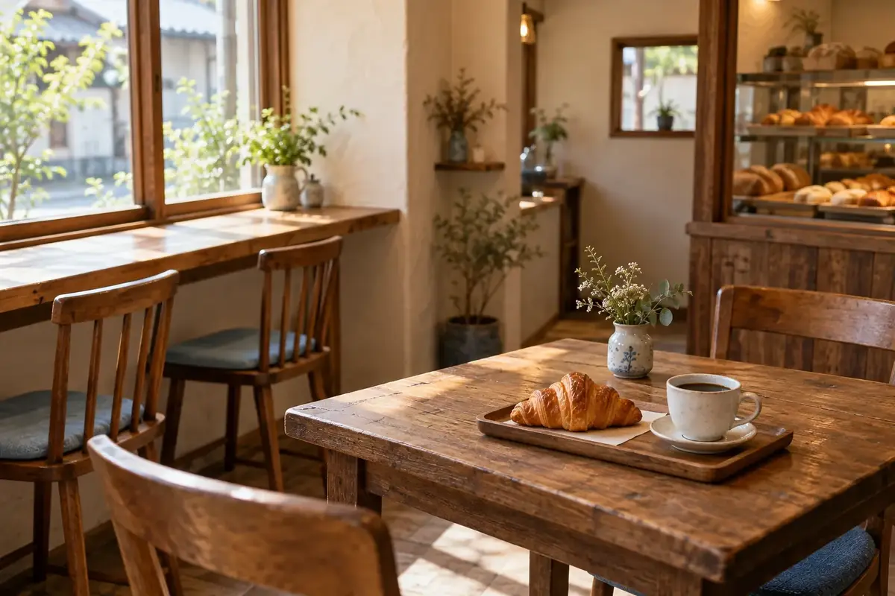

01
うちぬきの水
西条のまちのあちこちで湧き出る地下水「うちぬき」。一年を通して水温が安定したやわらかな水で仕込むと、生地がしっとりとまとまり、口あたりのやさしいパンに焼き上がります。
仕込み水はすべて、うちぬきの水を使っています

Concept

01
西条のまちのあちこちで湧き出る地下水「うちぬき」。一年を通して水温が安定したやわらかな水で仕込むと、生地がしっとりとまとまり、口あたりのやさしいパンに焼き上がります。
仕込み水はすべて、うちぬきの水を使っています

02
愛媛県は、はだか麦の生産量が日本一。東予で育った香ばしいはだか麦を、カンパーニュや一部のパンに配合しています。噛むほどに広がる、麦本来の甘みを味わってください。
はだか麦の生産量、愛媛県が日本一

03
まだ暗い朝4時、工房に灯りをともして一日がはじまります。作り置きはせず、その日の分をその日の朝に。開店の7時には、焼きたての食パンと塩バターロールが並びます。
前日の売れ残りは、お店に並べません
Baking Time
焼きたてをねらうなら、この時間がおすすめです。
開店と同時に。うちぬき食パンの1回目が並びます。
揚げたてのカレーパン、あんバターなど。
伊予柑ピールのデニッシュ、はだか麦のカンパーニュ、季節限定パン。
午後のお買いものにも、焼きたてを。
※焼き上がり時間は目安です。日によって前後します。
当日の焼き上がり情報はInstagramでお知らせしています。
Reservation
「確実に食パンがほしい」という方は、前日までのご予約がおすすめです。
前日の17時まで受け付けています。当日のご予約は、お電話でご相談ください。
お名前と、ほしいパン・個数・受け取りたい時間をお知らせください。
受取時間内にご来店ください。お支払いは受け取りのときにお願いします。
電話受付 7:00〜17:00（月・火曜は定休日）
Our Story


店主は大阪のベーカリーで10年間修業を積んだのち、生まれ育った西条へUターンしました。子どものころから当たり前に飲んでいた、うちぬきの水。その水でパンを焼いてみたら、生地の手ざわりがまるで違ったことが、この店のはじまりです。
2019年、夫婦ふたりで「みずのわベーカリー」を開きました。店名には、水がつなぐ人の輪のように、まちの人が気軽に集まれる場所になれたら、という思いを込めています。
接客と焼き菓子は妻の担当。レジ横には、日替わりのクッキーやマフィンも並びます。通勤前に、部活帰りに、お散歩のついでに。どうぞ気軽にのぞいてみてください。
みずのわベーカリー 店主夫婦（人物は架空の設定です）
Shop Info
| 店名 | みずのわベーカリー（Mizunowa Bakery） |
|---|---|
| 住所 | 〒793-0000 愛媛県西条市みずのわ町1-2-3※架空の住所です |
| 電話 | 0897-00-0000※架空の電話番号です |
| 営業時間 | 7:00〜17:00売り切れ次第終了 |
| 定休日 | 月曜・火曜臨時休業はお知らせ・カレンダーでご案内します |
| 駐車場 | 店舗前に6台 |
| 店内 | イートイン4席（ドリップ珈琲あり） |
| お支払い | 現金・各種QR決済・交通系IC |
| 日 | 月 | 火 | 水 | 木 | 金 | 土 |
|---|
※架空のお店のイメージ図です。実際の地図ではありません。
駅から徒歩約8分（という設定です）。お車の方は店舗前の駐車場（6台）をご利用ください。
FAQ
前日の17時まで、お電話またはLINEで受け付けています。うちぬき食パンは人気のため、確実にお求めになりたい方はご予約がおすすめです。
店舗前に6台分の駐車場がございます。満車の際は、少しお待ちいただくか、時間をずらしてお越しください。
現金のほか、各種QRコード決済、交通系ICカードがご利用いただけます。クレジットカードには対応しておりません。
店頭のプライスカードに、特定原材料（小麦・卵・乳など）を表示しています。同じ工房で製造しているため、微量の混入の可能性があります。ご心配な方はスタッフにお声がけください。
はい、イートインスペース（4席）がございます。ドリップ珈琲（パンと一緒なら250円）もご用意しています。